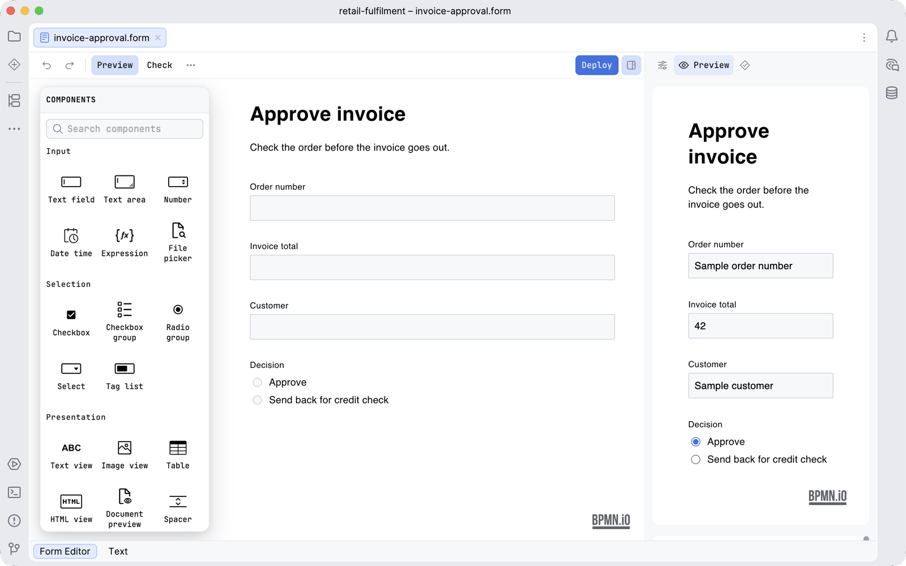

Guide / Editors
The form editor
The form editor builds the screens a user sees in a user task, and saves them as a Camunda Form.
What it is
A Camunda Form is a JSON file with the extension .form. A user task shows it to a person. The editor is built on form-js. The file is saved as you edit.
Open and edit a form
- Open a
.formfile. Penstock takes only files that are Camunda Forms. A form file of another tool is left alone. - The palette of fields is a floating island beside the canvas, the form in the middle, and the properties in the Properties tab of the sidebar on the right.
- Drag a field onto the form. Give it a label, and a key. The key is the name of the process variable the field writes.
- Press Deploy to send it to the engine, with the same settings a diagram uses.
The toolbar
| Preview | Opens the Preview tab of the sidebar, which shows the form as a user sees it. See below. |
| Check | Opens the Problems tab. The form check is lint, so it is free. |
| Deploy | Sends the form to the engine. See Deployment. |
| More | Holds Share as HTML…. See Share as HTML. |
Preview
Press Preview on the toolbar to try the form with sample data. The Preview tab of the sidebar opens beside the canvas and shows three things:
- The form as a user sees it.
- Input data: the JSON the form is given. It starts as sample data made from the fields: a text, a number, the first option of a choice, one row of a dynamic list, a group under its path. It follows the form as you edit it, until you write your own. If what you wrote is not valid JSON, the preview says what is wrong.
- Output data: the JSON the form would submit. Next to its heading, a count such as 2 fields need attention says how many fields are not valid.
Before the form has been read, the tab says Nothing to preview yet. and fills in as soon as it is read. The palette is hidden while the preview is open, and its tooltip says so. It is why the canvas never grows a fourth column for the preview. The form-js logo stays visible.

The sidebar of a form
The sidebar of a form has three tabs, in this order: Properties, the settings of the selected field; Preview, described above; and Problems, the list of the form check. Until you press Check the Problems tab says Check the form to see problems here. If the file cannot be read, it says This form could not be read, so there is nothing to check, and the reason is on the canvas.
The form check
The form check is lint, so it is free: no licence is asked for, in the editor or in penstock check. The decision editor's overlap and gap analysis is the one that is Pro.
- Press Check. A card called Form check opens over the canvas with the findings. Show all opens the Problems tab, which holds the whole list. While that tab is open the card stays away.
- Click a finding to select the field and open its properties.
- Press Check again to put the card away. Recheck runs the check again.
| Finding | Rule |
|---|---|
| Two fields write the same variable, or a field writes a group's path. Tasklist refuses to open such a form. | form/key-clash |
| A field writes no variable | form/no-key |
| An option list offers one value twice | form/repeated-option |
| An input has no label | form/no-label |
When all is well the card says Every field writes its own variable, and every option means something different. The same check runs on every form when you check the whole project. See Diagram check.
Forms and the rest of the project
- A user task links to a form by its id. If no
.formfile has that id, the check reports code/unknown-form. penstock docswrites a page for each form with the variable every field writes, whether it is required, its options and when it is hidden.- The project model lists forms and the tasks that use them.
What you see
- The palette of fields beside the canvas, the form in the middle, its properties in the Properties tab of the sidebar.
- After Check, a card called Form check with a count of problems, or the line Every field writes its own variable, and every option means something different.
Common problems
- My .form file does not open in the form editor.
- It is not a Camunda Form (a JSON object with
components). Penstock leaves other.formfiles to the tool that made them. - "This file could not be read as a Camunda form".
- The JSON is not a valid form. The editor shows the reason.
- Tasklist will not open my form.
- Run Check. Two fields with the same key is the usual reason.
- Where did the preview go?
- Press Preview again. It is the second tab of the sidebar, and the palette is hidden while it is open.